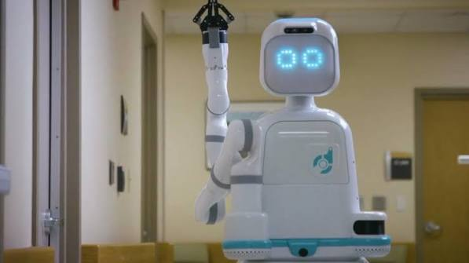

Moxi, hemşirelerin yerine getirmek zorunda olduğu sık ve tekrarlayan görevlerin bir kısmını hafifletmeye yardımcı olmak üzere tasarlanmış bir mobil robottur. Moxi; hafif tıbbi malzemeleri taşımasını, kapılardan ve koridorlardan geçmesini ve hemşireler ile diğer personel için eşyaları bırakmasını sağlayan bir kola, kavrayıcı bir ele ve hareketli bir tabana sahiptir.
YAPİMCİSİ: DiligentRobotics
Geri Dön